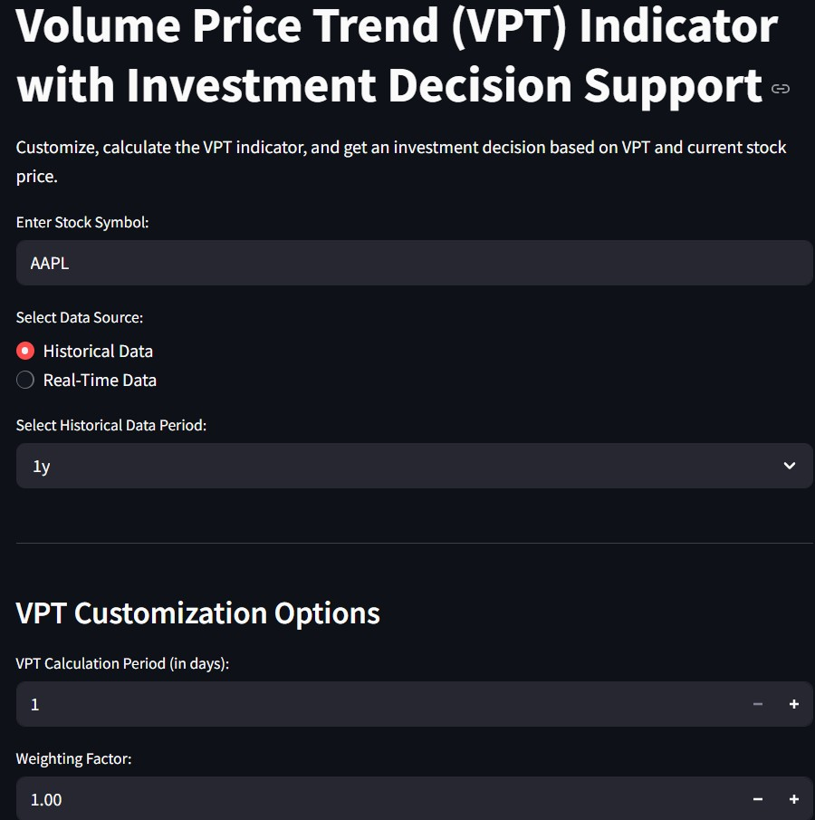
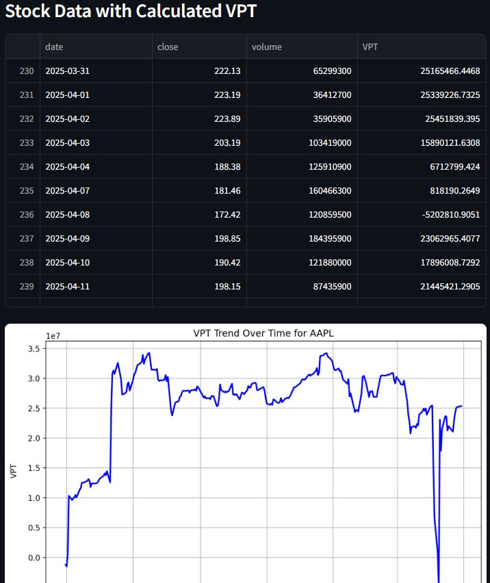
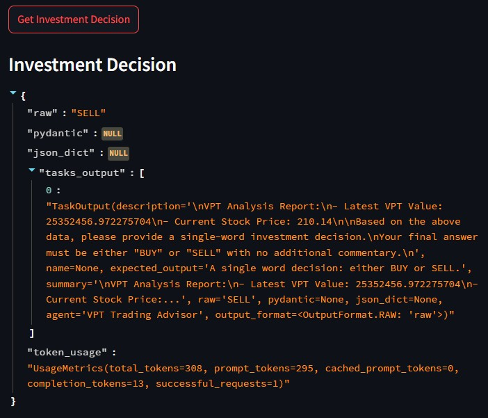
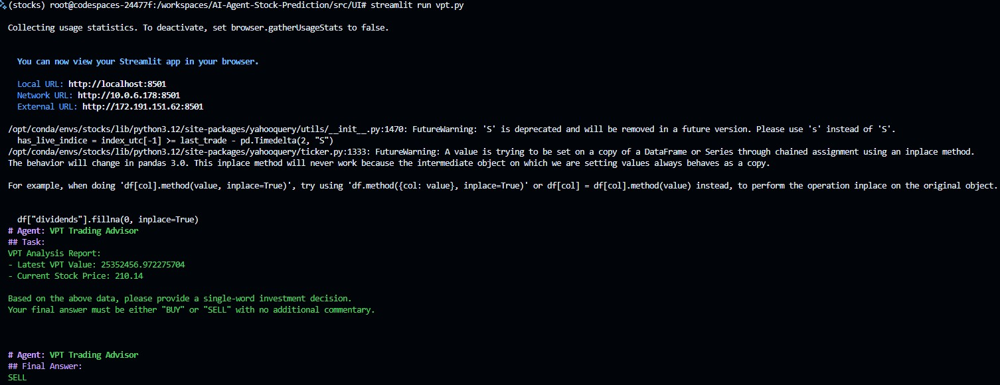
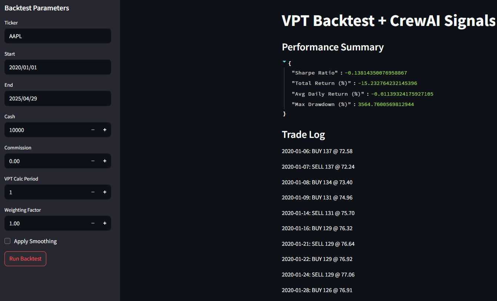
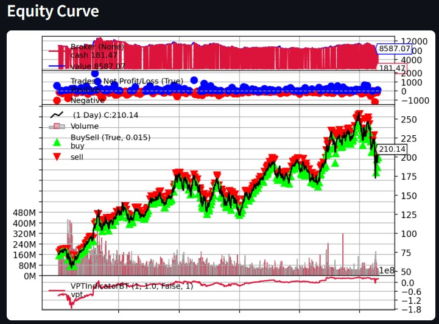

This project implements an AI Agent-based Stock Prediction system integrating a custom Volume Price Trend (VPT) indicator with CrewAI agents to generate informed investment recommendations. I contributed by developing the VPT calculation engine, building the Streamlit user interface with real-time and historical data fetching, integrating decision-making capabilities via CrewAI agents, writing comprehensive unit and integration tests to ensure performance and scalability, and implementing the backtesting framework to validate the VPT-based trading strategy.
| Sprint | Objective |
|---|---|
| Sprint 1 | Develop minimal viable product: VPT indicator implementation and basic data fetching |
| Sprint 2 | Add customization options and real-time data integration |
| Sprint 3 | Integrate CrewAI decision support and implement testing framework |
| Sprint 4 | Implement backtesting framework for the VPT strategy |
Other tasks and user stories are documented in the Appendix.






| Date | Commit SHA | Description | Task |
|---|---|---|---|
| 2025-02-03 | d099f9af6395966597c7809a303db7bd1a88e37c | VPT main file | VPT.1 |
| 2025-02-11 | 68173156e69aded01a5f8aece3d08eb560009662 | Add VPT features and fetch real-time and historical data | VPT.6 |
| 2025-02-27 | 83627a9dc513a276ed6b184c3c899e2886635b29 | Adding CrewAI capabilities for actionable investment recommendations based on VPT signals | VPT.8 |
| 2025-03-10 | 735071051b6df222838ff1304f383adfef48e7fd | Added comments | VPT.8 |
| 2025-03-25 | 1220e8150028e2c92cabdb802dc693960b81abbc | Add test cases for VPT indicator | VPT.10 |
| 2025-04-21 | 9659e4dcc6cdad3ae525ce26bad1774900ffeb7b | Backtesting code for VPT | VPT.11 |
For the full list of commits and detailed user story documentation, see the GitHub commits page.